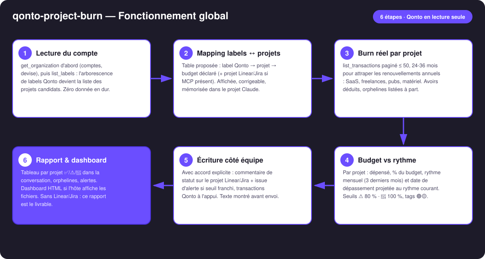
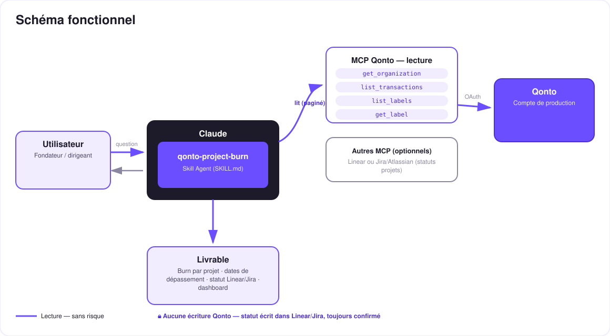

Ce que le projet X a vraiment coûté — le burn réel par projet, écrit là où l'équipe vit.
Les équipes pilotent dans Linear ou Jira ; la dépense, elle, vit dans Qonto. Résultat : personne ne sait ce que le projet X a réellement coûté — SaaS dédiés, freelances, pubs, matériel. Le skill referme ce fossé :
Table de config simple proposée depuis les labels Qonto, corrigeable ligne par ligne, mémorisée dans la conversation ou le projet Claude.
Jusqu'à 36 mois scannés (renouvellements annuels inclus), avoirs déduits, orphelines listées à part — jamais attribuées en douce.
Rythme mensuel courant → « au rythme actuel, Alpha dépasse le 12/08 », tags de confiance 🟢🟡, seuils ⚠️ 80 % · 🔴 100 %.
Avec accord : commentaire « X € / Y € — Z % » sur le projet Linear/Jira + issue d'alerte si seuil franchi, transactions Qonto à l'appui.
| Prérequis | Détail | Obligatoire |
|---|---|---|
| Compte Qonto production | Le skill s'adapte à toute organisation — get_organization d'abord, zéro donnée en dur | ✅ |
| Pays | Universel — labels + transactions, aucune règle fiscale : tous les pays Qonto (FR, DE, ES, IT, AT, NL, BE, PT) | ℹ️ tous |
| MCP Qonto connecté | Connecteur officiel (claude.ai / Claude Desktop), login OAuth | ✅ |
| Labels Qonto | Quelques transactions labellisées par projet. Sans labels : mapping proposé depuis les fournisseurs récurrents (tags 🟡) | ⭕ recommandé |
| MCP Linear ou Jira/Atlassian | Détecté dynamiquement — sinon mode dégradé : rapport complet + dashboard HTML dans la conversation | ⭕ optionnel |
| Budgets déclarés | Fournis par l'utilisateur dans le mapping (ou lus dans la description du projet Linear si formatés) — jamais inventés | ✅ à la config |

modify_transaction_cash_flow_category (écriture légère, réversible, confirmée)emitted_at vs settled_at) · multi-comptes gérés · pagination ≤ 50 partout
Côté Qonto, tout est en lecture — aucun virement, aucun paiement, rien qui touche à l'argent. Le trait pointillé (écriture) part vers Linear/Jira, pas vers la banque : un commentaire ou une issue, toujours prévisualisés en texte intégral et publiés uniquement après l'accord explicite dans la conversation.
| Projet | Dépensé | Budget | % | Rythme/mois | Dépassement projeté | Statut |
|---|---|---|---|---|---|---|
| Alpha | 10 440 € | 12 000 € | 87 % | 1 950 € | 12/08 | ⚠️ |
| Kepler | 3 100 € | 8 000 € | 39 % | 620 € | — | ✅ |
| Odyssey | 21 500 € | 20 000 € | 108 % | 1 400 € | dépassé | 🔴 |
Exemple entièrement fictif — projets, montants et dates inventés pour la démonstration.
| Label Qonto | Projet | Projet Linear/Jira | Budget déclaré |
|---|---|---|---|
alpha | Alpha | Alpha (Linear) | 12 000 € |
kepler-app | Kepler | Kepler (Linear) | 8 000 € |
ody | Odyssey | — (pas de projet tracker) | 20 000 € |
| Sortie | Format | Quand |
|---|---|---|
| Réponse dans la conversation | Tableaux markdown (burn par projet, orphelines, alertes) | Toujours — c'est la base |
| Commentaire Linear/Jira | « X € / Y € — Z % · dépassement estimé le [date] · top 5 lignes » sur le projet mappé | MCP tracker détecté + accord explicite |
| Issue d'alerte Linear/Jira | « ⚠️ Budget [projet] Z % » + les transactions Qonto qui la justifient | Seuil franchi + accord explicite |
| Dashboard interactif | Fichier/artifact HTML : barres dépensé/budget, rythme, marqueurs de dépassement | Si l'hôte affiche les fichiers ; repli automatique sur les tableaux |
La démo ≤ 3 min jointe à la PR suit le storyboard : problème → mapping → burn & dates de dépassement → l'issue « ⚠️ Budget Alpha 87 % » découverte dans Linear, transactions Qonto à l'appui → dashboard final. Le script détaillé de tournage est conservé en interne (hors dépôt).
| Idée | Effort | Note |
|---|---|---|
| Budget par sprint/cycle (pas seulement par projet) | Moyen | Réutilise le mapping, découpe par dates de cycle Linear |
Marge réelle par projet : croiser avec list_client_invoices | Moyen | Burn − facturé = marge du projet |
| Rituel hebdo : statut posté chaque lundi | Faible | Même écriture, même consentement |
| Slack/Notion comme cibles alternatives de statut | Faible | Multi-MCP optionnel, détection dynamique |
list_cash_flow_categories → 403 sur le connecteur claude.ai : attendu, repli sur les labelsPour la vue entreprise (runway, cockpit tous coûts) : le skill qonto-ceo-cockpit. Ici, c'est la granularité projet.